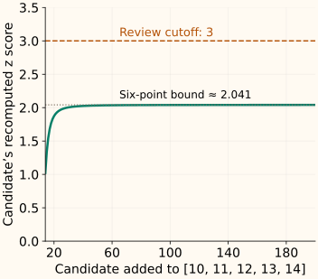

Z-Score Method
A z score expresses a value’s distance from a reference mean in units of the reference standard deviation. It is easy to calculate, but its interpretation depends on which data supplied that mean and standard deviation.
This chapter starts with a fixed training reference, then shows why computing the reference from the suspicious values themselves can hide an extreme observation. The previous chapter explains why a large score is a reason to inspect a row, not proof that it is wrong.
Define the reference before scoring a value
Let $x_1,\ldots,x_n$ be $n$ reference observations. Write $\bar x$ for their mean and $s$ for their sample standard deviation. We use divisor $n-1$ for the variance, with at least two reference values:
For an observation $x$ to be scored, subtract the fitted center and divide by the fitted spread:
A positive score lies above the reference mean; a negative score lies below it. Its magnitude says how many reference standard deviations away it is. The score has no measurement units.
For [10, 11, 12, 13, 14], the mean is 12. The squared deviations sum to 10, so $s=\sqrt{10/4}\approx1.5811$. A future value of 17 has score $(17-12)/1.5811\approx3.1623$.
Why specify the variance divisor?
Dividing by $n$ instead of $n-1$ gives another common standardization convention. On these five values, it gives standard deviation $\sqrt2\approx1.4142$ and score about 3.5355 for 17. SciPy’s zscore defaults to ddof=0; use ddof=1 to match this chapter. StandardScaler uses the divisor-$n$ convention.
Both calculations must state their convention. Merely changing the divisor does not solve the sensitivity to extreme reference observations.
An extreme value can weaken its own score
Score 100 against the original five-value reference: its z score is about 55.6561. Now append 100 and recompute the reference on all six values. The mean rises to 26.6667 and the standard deviation to 35.9537, shrinking that same observation’s score to about 2.0397.
| Reference | Mean | Sample s | Candidate z |
|---|---|---|---|
| Original five values | 12.0000 | 1.5811 | 55.6561 |
| Five values + candidate | 26.6667 | 35.9537 | 2.0397 |
This is especially stark in a small sample. With sample-standard-deviation scaling, any observation scored against the same $n$ values that include it has $|z|\le(n-1)/\sqrt n$. For six observations, that upper bound is about 2.041. A strict cutoff of 3 therefore cannot flag any of the six, however extreme one becomes relative to the other five.

A cutoff of 3 is not a universal probability statement
If observations truly come from a normal distribution and you use its true mean and standard deviation, about 0.27% fall outside ±3 by chance. That is roughly 2.7 observations per 1,000 in expectation, even with no data errors.
Estimated parameters, small samples, heavy tails and mixed populations change this interpretation. A long-tailed feature can have many valid large scores. A z score is not the probability that a record is wrong, and a three-standard-deviation rule is not a substitute for a formal outlier test.
Choose a review threshold for the task, inspecting flagged cases and the cost of missed cases. For a single-column distribution with a long tail, compare a justified log representation or a quartile-based rule. For contextual or joint patterns, revisit the reference itself.
A median-based alternative
A robust alternative replaces the mean with the median and standard deviation with a median-based spread. Let $m$ be the reference median. The median absolute deviation, or MAD, is the median of the distances $|x_i-m|$:
The modified z score uses that spread with a constant that aligns its scale with a normal reference:
For [10, 11, 12, 13, 14, 100], the median is 12.5 and MAD is 1.5. The modified score of 100 is about 39.3452, so this reference is much less distorted than the mean-and-standard-deviation version. NIST reports 3.5 as a commonly used modified-score labeling threshold; it remains a review rule, not a diagnosis.
If MAD is zero, the formula is undefined. This often occurs with many tied values. Choose an explicit policy, such as a domain tolerance or a different model, rather than adding an arbitrary tiny denominator. The same issue arises when the ordinary standard deviation is zero.
Store the reference instead of re-fitting each batch
Run both reference choices and the modified score
import numpy as np
from scipy.stats import zscore, median_abs_deviation
train = np.array([10., 11., 12., 13., 14.])
mean, sd = train.mean(), train.std(ddof=1)
if not sd > 0:
raise ValueError("reference spread is zero")
print(round((100. - mean) / sd, 4))
combined = np.append(train, 100.)
print(round(float(zscore(combined, ddof=1)[-1]), 4))
center = np.median(combined)
robust_sd = median_abs_deviation(combined, scale="normal")
print(round((100. - center) / robust_sd, 4))
55.6561
2.0397
39.3452zscore(new_batch) standardizes using that batch’s own values. It does not remember the original reference. The first calculation above makes the stored mean and spread explicit. scale="normal" returns MAD divided by approximately 0.67449, so the last line must not multiply by that constant again.
C++: fit a reference and reuse it
The helper uses an incremental mean and squared-deviation accumulator, then divides by $n-1$. It rejects an empty, single-valued or zero-spread reference and nonfinite values.
Compile a fitted sample-z scorer
#include <cmath>
#include <iomanip>
#include <iostream>
#include <stdexcept>
#include <vector>
struct Reference {
double mean, sd;
double score(double x) const {
if (!std::isfinite(x)) throw std::invalid_argument("finite input required");
double z = (x - mean) / sd;
if (!std::isfinite(z)) throw std::overflow_error("score overflow");
return z;
}
};
Reference fit(const std::vector<double>& values) {
if (values.size() < 2) throw std::invalid_argument("two values required");
double mean = 0, m2 = 0;
std::size_t count = 0;
for (double x : values) {
if (!std::isfinite(x)) throw std::invalid_argument("finite reference required");
const double delta = x - mean;
mean += delta / ++count;
m2 += delta * (x - mean);
}
const double sd = std::sqrt(m2 / (count - 1));
if (!(sd > 0) || !std::isfinite(sd) || !std::isfinite(mean))
throw std::domain_error("reference spread is zero or not representable");
return {mean, sd};
}
int main() {
std::cout << std::fixed << std::setprecision(4);
std::cout << fit({10,11,12,13,14}).score(100) << "\n";
std::cout << fit({10,11,12,13,14,100}).score(100) << "\n";
}
55.6561
2.0397References and further reading
- NIST: detection of outliers — masking, sample z-score limits, modified scores and the assumptions of outlier tests.
- SciPy: zscore — reference calculation, degrees-of-freedom convention and missing-value behavior.
- SciPy: median_abs_deviation — median-based dispersion and normal-scale calibration.